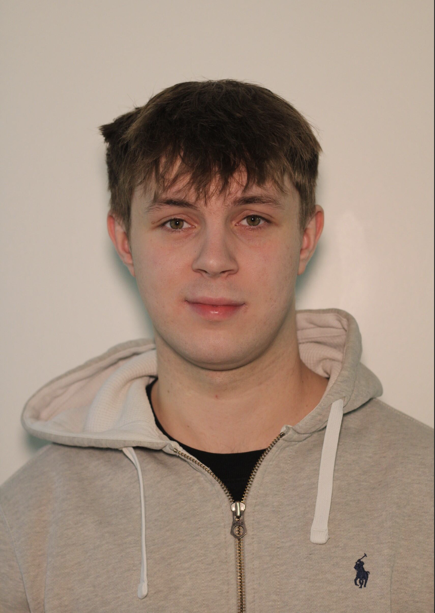

Tom Loader

Throughout my time in Media Production at Nottingham Trent, I feel as though I have enjoyed and therefore specialised in a
number of areas. I am drawn to movement, light, and atmosphere-crafting visuals that feel immersive and emotionally resonant.
Music Production plays a key role in how I think about presenting a piece of work. Specifically, sound and rhythm being essential
in influencing the pace and emotional tone of my visual work. Additionally, I believe producing has taught me to approach editing
and visual sequencing with the same attention to rhythm, texture and atmosphere.
Other areas that I am passionate about and aim to pursue include videography, photography and live event coverage. I have recently
bought my first camera and aim to master all of its technicalities and start to build my personal brand and create a strong
reputation online and in my local area.
During my studies, I have had the opportunity to work with numerous external real-world clients such as NET (Nottingham Express
Transit), The D.H. Lawrence Birthplace Museum and Derbyshire Fire and Rescue Service. These experiences have stengthed my
networking and production skills, being able to build relationships with clients and to create work that has been used in the
real world for real world audiences.
Additionally, during my time on the course I have been able to gain 80 hours of work experience, being a camera operator,
vision mixer and runner. This includes multiple productions for Trent TV such as camera operating for Varsity Football at
Meadow Lane and being a runner on-set for Toffee Hammer Productions at Tower Bridge Studios in London.
For the future, I aim to continue strengthening my skills in post-production to expand my skill set and to build on my networking
skills to build meaningful connections relationships with future clients. Ultimately, I aim to build a career in promotional
videography by combining my skills in cinematography, photography and music production to create work that feels dynamic and
authentic.
 @rollthetapess
@rollthetapess
 @roll.the.tapes26
@roll.the.tapes26